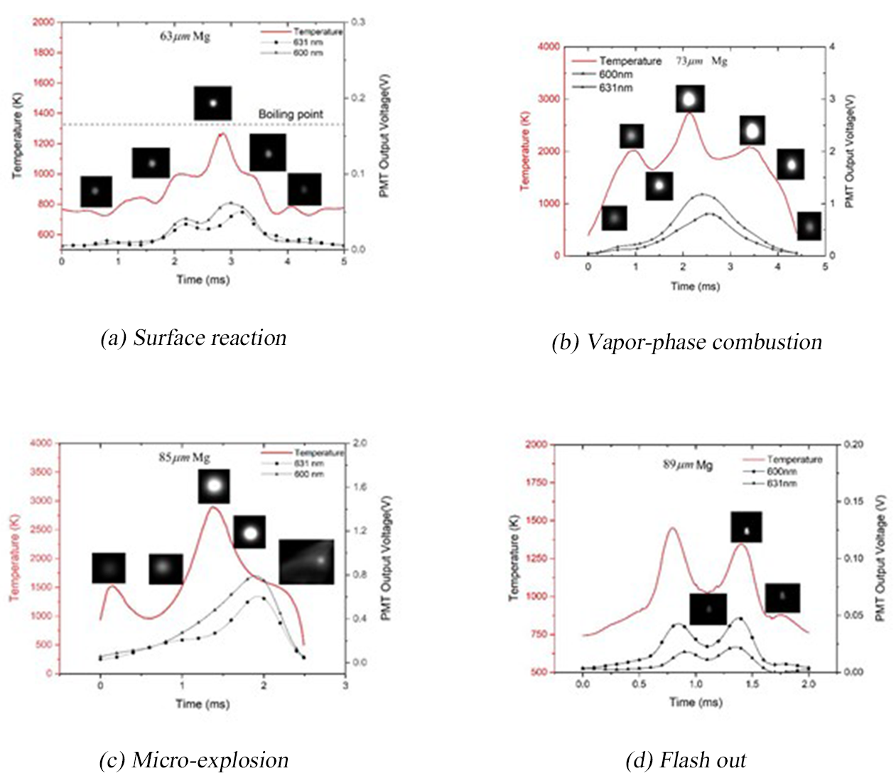
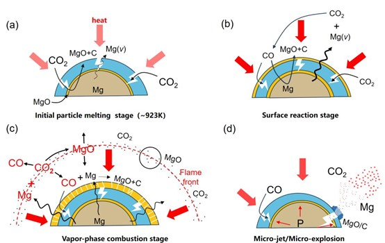

Home
Home
Enhancing the energy density of fuels and the controllability of thrust represents a continuous
objective for researchers in aerospace propulsion. Powdered fuels, with magnesium and
aluminum as prime examples, are assuming more significant roles in aerospace power systems
due to their plentiful reserves, ease of transportation, and high combustion heat values. From a
micro-perspective, these fuels combust within the engine's combustion chamber as single particle
or as clusters formed from particle agglomeration. Investigating the ignition and combustion
processes of single particles and developing a particle ignition and combustion model that can
precisely forecast the thermal release during particle combustion is essential for guiding numerical
simulations at the combustion chamber scale. Such models are instrumental for informing
engine design, offering substantial value for both theoretical studies and practical applications.
The Hypersonic Propulsion Laboratory has developed a controllable environment laminar
combustion facility to conduct research on the combustion characteristics of single particles,
exemplified by experiments involving the combustion of magnesium in carbon dioxide.
Fig. 1 Schematic diagram of laminar combustion facility
As illustrated in Fig. 1, particles are electrostatically charged and dispersed by an
emission device located below, subsequently entering the combustion region above, which
is characterized by a controlled atmosphere and temperature, via carrier gas. Upon laser
ignition, the particles initiate combustion. The ensuing combustion process is subject to
analysis through various diagnostic techniques, including high-speed imaging, pyrometry,
and spectrometer.
In contrast to conventional flat-flame combustion apparatuses, the HPL's laminar combustion
facility utilizes an electric heater to elevate the gas temperature, thereby decoupling the
atmospheric composition from the temperature control. This methodology prevents the
interference of polluting species, such as combustion byproducts, with the combustion
process of the particles, which would otherwise be introduced when creating high-temperature
environments.
The combustion modalities of magnesium particles in a CO2-rich environment are predominantly
divided into four modes: surface reactions, vapor-phase combustion, micro-explosions, and
flash out, as illustrated in Fig. 2 and Fig. 3.
• Surface Reaction: The chemical reaction follows the reaction equation Mg + CO2 → MgO + C. This mode is kinetically controlled, and the combustion temperature is typically constrained below the boiling point of magnesium, as shown in Fig. 2(a). This particular combustion mode is generally observed at the initial stage of the ignition process when particle temperatures are comparatively low. Carbon dioxide, present in high concentrations around the particle, permeates through the pores of the oxidation shell to reach the magnesium core, where it engages in the reaction. Consequently, new layers of magnesium oxide and solid carbon are formed at the inner surface of the initial oxidation shell, as illustrated in Fig. 3(a).
• The vapor-phase combustion follows the reaction equation Mg + CO2 → MgO + CO, which is controlled by diffusion processes. In accordance with the Dn power law, the combustion time tc is empirically related to the initial particle diameter D by the expression tc=kD1.76. The combustion temperature during this principal phase of burning generally surpasses the boiling point of magnesium, as depicted in Fig. 2(b). After the particles heated up through the surface reaction, a large amount of magnesium core evaporated, and the magnesium vapor diffused to the outside of the oxide shell to react with carbon dioxide to form magnesium oxide and carbon monoxide (Fig. 3 (b)). The carbon monoxide generated on the particle surface then reacts with the molten magnesium core to form magnesium oxide and carbon on the outer surface of the oxide shell (Fig. 3 (c)).
• The micro-explosion mode is mainly caused by the internal magnesium vapor pressure exceeding the mechanical performance limit of the magnesium oxide shell during the vapor-phase combustion stage. The magnesium vapor pierces through the vulnerable regions of the shell, creating a micro-jet that reacts intensely with the surrounding carbon dioxide (Fig. 3(d)). The temperature preceding the micro-explosion typically exceeds the boiling point of magnesium, with the combustion products illustrated in Fig. 2(c).
• During the flash out mode, there is a precipitous decline in the particle's luminosity over an exceedingly brief interval, which is indicative of unstable combustion. The temperature during combustion exhibits pronounced variations but remains fundamentally below the boiling point of magnesium, as depicted in Fig. 2(d). From a holistic perspective, the flash out mode is categorized as a form of surface reaction.
Fig. 2 Combustion process of magnesium particles in CO2 atmosphere
Fig. 3 Schematic diagram of combustion mechanism of magnesium particles in CO2 atmosphere